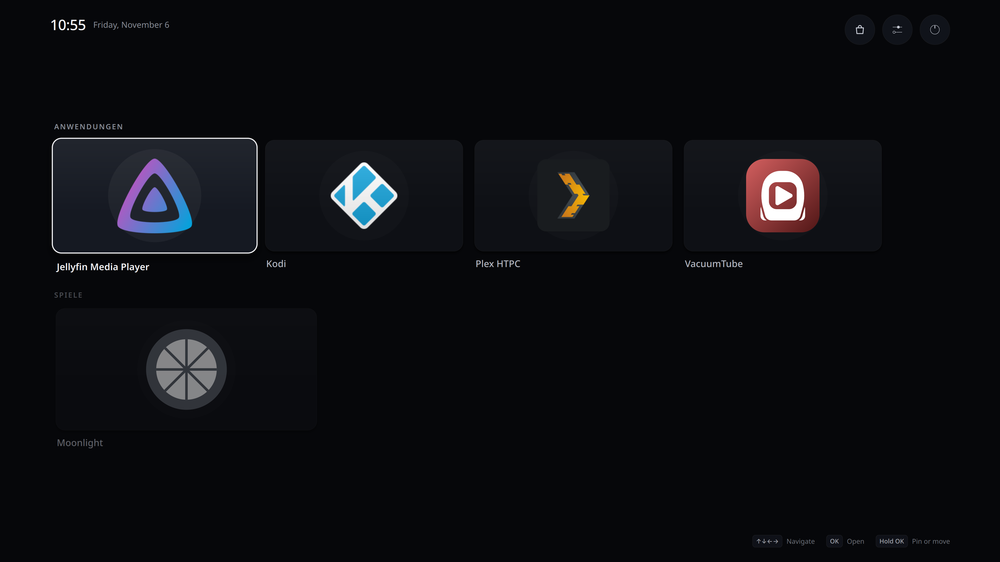
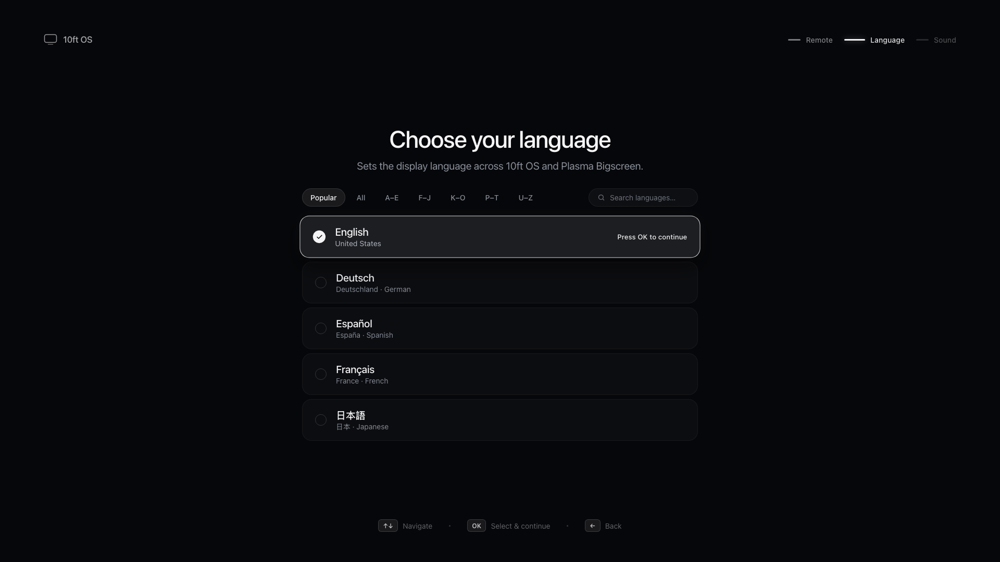
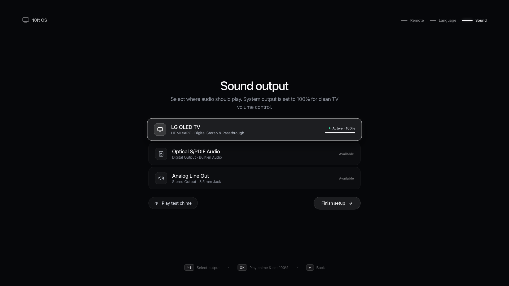

Open-source Linux television OS
A smart TV that
works for you.
Bigfoot OS turns a mini-PC or computer into a TV you control with your remote—a private
alternative to Google TV.
No ads. No telemetry. No account.

What you get
Made for the couch.
Everything is designed to be read from three meters away and driven with five buttons.
-
Big-screen launcher
Boots straight into a Wayland 10-foot TV interface. No desktop, no login screen.
-
Your remote just works
HDMI-CEC is on by default, so the remote that came with your TV most probably works too. Bluetooth remotes (like the Google or the Fire TV Remote) and Xbox controllers are tested and working.
-
Guided first-run setup
Your remote is paired automatically. The first-run assistant guides you through it.
-
App Store
Install Flatpak apps like Kodi, Jellyfin, Plex HTPC, VacuumTube, ARTE.tv, Steam, Moonlight and RetroArch in 1 click from the home screen. No accounts needed.
-
Easy updates
Updates download in the background and apply on reboot. If one misbehaves, roll back to the previous version.
-
Phone as remote
KDE Connect turns your phone into a trackpad, keyboard and media remote (currently needs a working remote to begin with, sorry for that I will fix this soon).
-
Home Assistant
Optional integration to control playback, volume and TV power from Home Assistant.
-
Hardware video decoding
Smooth 4K HEVC and AV1 playback on AMD and Intel graphics for home theater PCs (HTPCs) and mini-PCs.



3 golden rules, aligned with the goal of
stable and zero distraction television
-
1
A solid base to build on
In a perfect reality, updates never break your system. We are pretty much there.
bootc allows bringing it back to an earlier state. If an update misbehaves, roll it back! -
2
No attention seeking
No recommendations, no ads. No tricks, no dark patterns.
-
3
Zero Bloat
No update popups. No status icons. No alerts. No reminders.
It does not talk to you. It does not understand you.
Unplug it now if it does. It shouldn't.
Install
Ready in a few minutes.
You need a mini-PC (or any other PC), a USB drive, mouse & keyboard and an internet connection during installation.
-
Download the installer
Get the installer for your computer.
-
Write it to a USB stick
Use Fedora Media Writer, balenaEtcher, the Raspberry Pi Imager or the command line. Replace
/dev/sdXwith your USB device. This erases it.sudo dd if=bigfoot-os-amd64-netinstall.iso of=/dev/sdX bs=4M status=progress conv=fsync -
Boot from it
Select your disk on the install screen. Everything else is automatic.
-
Follow the setup wizard
When it reboots, the wizard guides you through the rest with your remote.
Update channels
Choose a channel in Settings → System & Updates at any time.
| Channel | Best for |
|---|---|
| Stable | Your living-room TV. Thoroughly tested. |
| Beta | Early access to upcoming changes. |
| Main | Latest development builds. May break. |
Tested hardware
| Platform | Status |
|---|---|
AMD64 (x86_64) |
Tested on bare metal and QEMU |
ARM64 (aarch64) |
Tested in UTM on macOS |
| Remote or controller | Status |
|---|---|
| Chromecast with Google TV Remote (Bluetooth) | Working (with IR programming) |
| Amazon Fire TV Remote (Bluetooth) | Working (with IR programming) |
| Xbox Elite Wireless Controller Series 2 | Working |
| Other Xbox One S and Series X|S controllers | Untested, supported by xpadneo |
| HDMI-CEC TV remotes, Pulse-Eight USB-CEC adapters, IR receivers | Supported |
Privacy and security
Nothing phones home.
-
No telemetry
There is no tracking, no analytics and no account requirement. This website sets no cookies and loads nothing from third parties.
-
Opt-in by design
Integrations are disabled until you enable them.
-
Read-only system
The OS image can’t be modified by accident, system images can be verified with Sigstore signatures.
-
The show must go on
System updates are atomic, don't let a buggy update ruin your evening.
The system checks the Bigfoot system repository and Flathub for updates. The Bigfoot repository learns nothing about you from this check.
Questions and answers
Frequently asked questions.
What hardware do I need to run Bigfoot OS?
Any 64-bit (x86_64) mini-PC, home theater PC (HTPC), desktop, or laptop with AMD or Intel
graphics, 4 GB of RAM, 16 GB of storage, and an HDMI output. An ARM64
(aarch64) build is also available for virtual machines such as UTM on Apple Silicon.
How is Bigfoot OS different from Google TV, Android TV, or LibreELEC?
Unlike Google TV, Android TV, or Fire TV, Bigfoot OS shows zero ads, collects zero telemetry, and never
asks for an account. Unlike single-app appliances such as LibreELEC, it boots into a complete Wayland
10-foot television shell with a one-click Flatpak app store and atomic bootc system
updates.
Which TV remotes and game controllers work out of the box?
Most regular TV remotes work over HDMI-CEC on supported hardware or with a Pulse-Eight USB-CEC adapter. Bluetooth remotes—including the Chromecast with Google TV Remote and Amazon Fire TV Remote—pair automatically during first-run setup with built-in infrared (IR) TV volume and power programming, alongside Xbox wireless controllers and smartphones via KDE Connect.
Which media, streaming, and gaming apps can I install?
The built-in Store installs 10-foot Flatpak apps in one click without an account, including Kodi, Jellyfin, Plex HTPC, VacuumTube (for ad-free YouTube), ARTE.tv, Steam, Moonlight, RetroArch, Chiaki4deck, and PPSSPP, plus additional Linux apps from Flathub.
Does Bigfoot OS support 4K video decoding and surround sound?
Yes. Bigfoot OS includes hardware-accelerated 4K HEVC and AV1 video decoding on AMD and Intel GPUs,
PipeWire HDMI audio passthrough, and a built-in adaptive surround-to-stereo downmix DSP
(Cinema, Balanced, and Night presets) that keeps dialogue clear on
stereo TV speakers.
What happens if a system update goes wrong?
Bigfoot OS is built on Fedora Atomic (bootc) read-only container images. Updates download
quietly in the background and apply on reboot while keeping the previous deployment intact, so you can
roll back in seconds from Settings or the boot menu.
Open source
Built in the open.
Bigfoot OS is made of several public projects:
- osThe bootable container OS image
- appdrawerThe TV homescreen and OSD
- storeThe TV app store
- settingsTV settings and OS updates
- oobeFirst-run onboarding
- audio-dspAdaptive surround-to-stereo DSP
- odio-apiHome Assistant and web remote API
- akmodsPre-built kernel modules
- flatpaksThe Bigfoot Flatpak repository
- catalogCurated 10-foot app catalog
- design-guidelinesThe 10-foot UI design system